実装姿勢
現象だけを見るのではなく、設計上の責務と更新順まで確認して直す。
Portfolio / Game Programmer
ゲームシステムの実装と、制作効率を上げるツール開発の両方に取り組んでいます。 仕様に合わせて作るだけでなく、調整しやすさ、責務分離、運用しやすさまで含めて設計することを重視しています。
強み
Profile
実装中に問題が起きたときは、感覚で直すのではなく、責務の切り分けとデータの流れを整理しながら原因を追うことを大切にしています。 どの処理が状態を持ち、どのタイミングで更新され、どこが他のシステムと結びついているかを明確にすることで、修正時の影響範囲を抑えられる構成を目指しています。
C++ / DirectX11 では、ダイスの物理挙動、当たり判定、シーン間のデータ受け渡し、調整用 GUI、保存 / 読み込みなど、ゲームの土台になる部分を重点的に担当してきました。 Unity / C# では、UI や ScriptableObject を扱うツール、Editor 拡張、プレイヤーや収集物のシステム実装など、ゲーム制作を前に進めるための仕組み作りにも取り組んでいます。
ゲームが遊べるだけで終わらせず、プランナーや他の開発者が扱いやすい状態まで整えることが、自分の価値の出し方だと考えています。 今後も、挙動の説得力と制作現場の運用しやすさを両立できるプログラマーとして成長していきます。
現象だけを見るのではなく、設計上の責務と更新順まで確認して直す。
ゲームシステム実装、ツール開発、調整基盤の整備、運用改善。
あとから触る人が迷わない構造にすること、再利用できる単位で分けること。
Specialty
C++ / DirectX11 を用いたゲーム制作では、当たり判定、物理挙動、プレイヤー制御、シーン間データの受け渡しなど、ゲーム体験の根幹を支える実装を多く担当してきました。 特に、見た目と判定がずれないこと、パラメーター調整の影響範囲が追えること、状態の保存と復元が破綻しないことを意識しています。
Unity の Editor 拡張や ImGui ベースの調整画面、提出作業を短縮する WPF ツールなど、開発の手数を減らす仕組み作りにも強みがあります。 実装者しか触れないツールではなく、他メンバーが運用できる状態に整え、説明や配布まで含めて使われる形にすることを重視しています。
Skills
Works
作品ごとに、何を作ったかだけでなく、どの課題に対して何を判断し、どう実装して、どのような効果があったかを整理しています。
Team Project
料理を作って納品する流れをテンポよく遊ばせるチーム制作作品です。 自分はプロトタイプ段階のゲームループ実装に加えて、後半では調整基盤と内部システムの整備を中心に担当しました。 単に動くゲームにするだけでなく、プランナーが仕様変更を試しやすい開発環境へ持っていくことを主な役割として取り組みました。

初期段階では、プレイヤー移動、食材のキャッチ、納品までの基本ループを先に成立させ、チーム内で触って議論できる状態を作りました。 その後は、ゲーム中の状態をシーンやシステムをまたいで扱うための Transfer を整備し、プレイヤー、カメラ、日付進行、UI、音などの情報をまとめて扱えるようにしました。
加えて、ImGui を使った調整画面を作成し、値の変更、確認、保存、再読み込みを実行中に完結できるようにしました。 プログラマー以外でも扱いやすいことを重視し、ウィンドウ構成、表示順、一覧性を調整しながら、仕様書も含めて運用しやすい形へ整えました。
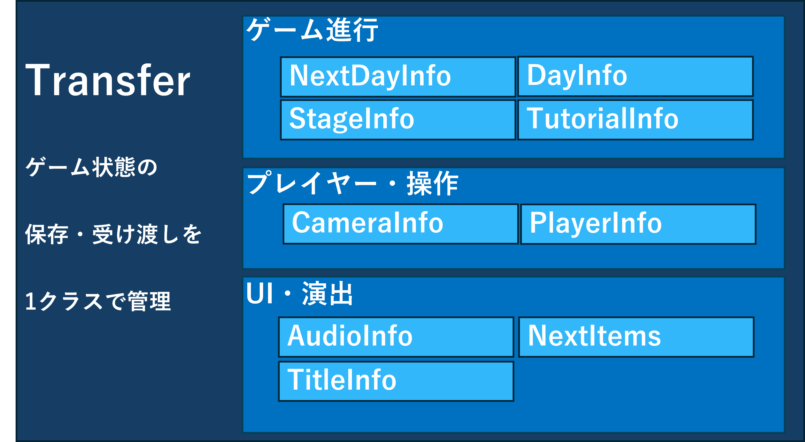

仕様変更のたびにプログラマーがコードや CSV を直接触る運用では、確認と修正の往復が重く、誰がどこを直せばよいかも分かりにくい状態でした。 また、シーンごとに必要な情報が分散していたため、保存 / 読み込みや次のシーンへの引き継ぎで不整合が起きやすい構造でした。

調整対象の情報を Transfer に集約し、日付進行や各種 UI 情報をひとまとまりのデータとして扱えるようにしました。 さらに JSON 化によって、構造のまとまり、項目の意味、差分の確認しやすさを改善し、保存 / 読み込みフローも同じデータ基盤の上で扱えるように整理しました。


プランナーがコードを触らずに調整を試せるようになり、調整サイクルを短縮できました。 保存 / 読み込みや次シーンへの受け渡しでも参照先が明確になり、不具合の切り分けがしやすくなりました。 実装面でも、ゲーム状態を一箇所に集めたことで、後から機能追加するときの影響範囲を追いやすくなっています。
オーダー作成 UI は、旧構成では入力項目が分散しており、設定順や確認箇所が分かりにくい状態でした。 そこで、入力と確認を分けすぎず、一覧で最終状態を見渡せる構成へ整理しました。 設定漏れの防止と確認速度の向上を優先し、プランナーが短時間で複数のオーダーを試せるようにしています。


食材ごとに複雑な判定形状を持たせると、調整項目と管理コストが増えすぎるため、高さ固定とサイズ管理のバランスを取りながら設計しました。 見た目の説得力と運用コストの両方を考え、必要十分な粒度で管理できる形へ寄せたことで、追加対応や修正にも耐えやすくしています。

チュートリアル専用の処理と通常フローが混ざると、残留アイテムや表示崩れの原因になりやすいため、状態と描画の責務を分けて整理しました。 一時的な分岐でしのぐのではなく、通常ゲームとチュートリアルでどの情報が共通で、どこが専用処理かを切り分けたことで、不具合を抑えながら挙動を調整できるようになりました。


Personal Project

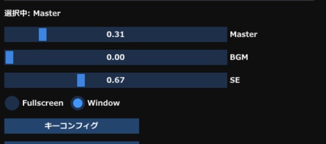
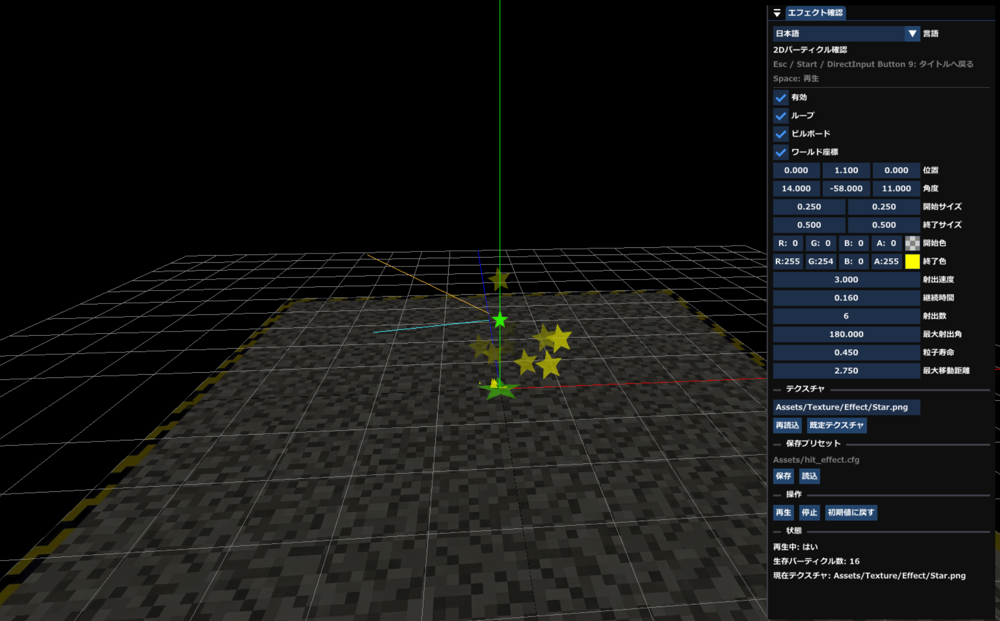
2.5D アクションとローグライク要素を組み合わせた個人制作作品です。 自分は、遊びやすさに直結する設定まわりと、強化状態を把握するための UI、演出を調整するためのツールを中心に整備しました。
キーコンフィグ、音量調整、FullScreen / Window 切り替えを実装し、環境差に左右されにくいプレイ体験を作りました。 また、強化要素では段階ごとの成長量を見える化し、現在の状態と次にどれだけ伸びるかを UI 上で把握しやすくしています。
エフェクト面では、Unity の ParticleSystem を参考にしつつ、ゲーム内でエフェクトを作成・調整・反映できる仕組みを用意しました。 その場で結果を確認しながら調整できるため、演出づくりの試行回数を増やせる点が大きな効果でした。
Personal Project
ボードゲームのダイスが転がるときの納得感を、ゲーム上の物理挙動として再現したいと考えて制作した作品です。 見た目どおりに当たることと、不自然に跳ね続けないことの両立を目標に、判定と物理の両面から作り込みました。
箱型の見た目でも AABB 的な扱いのままだと、回転したダイスの見た目と当たり方がずれてしまいます。 ダイスは接触しながら転がるため、この違和感がそのまま操作感や説得力の低下につながることが問題でした。
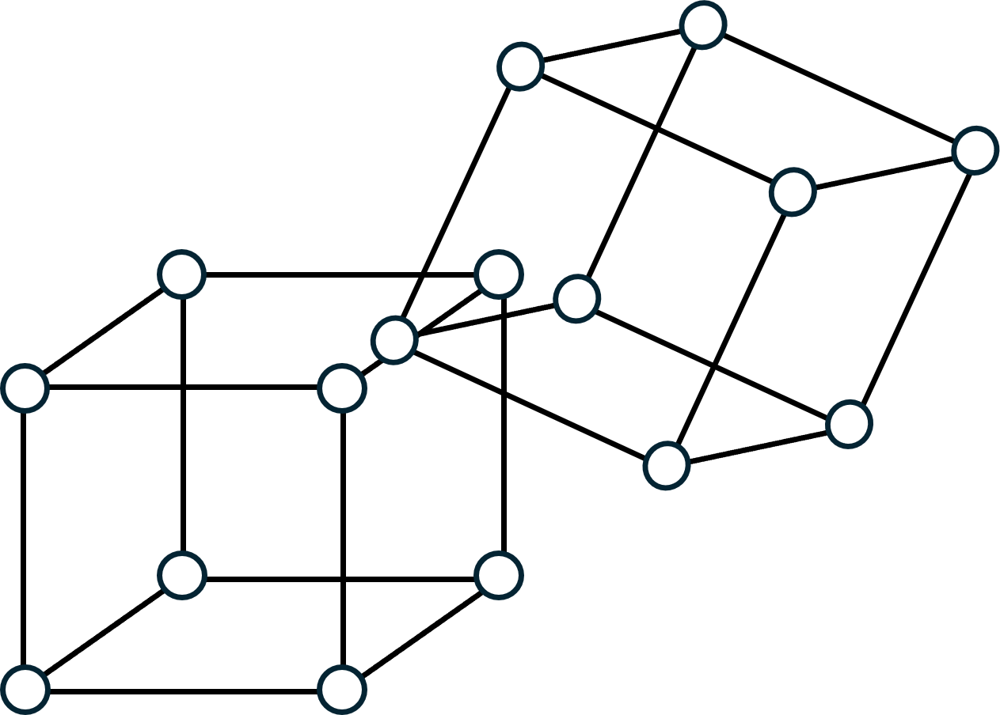
見た目どおりの接触を優先して OBB を採用しました。 その際、DirectXMath の `XMVECTOR` と、自分が普段扱いやすい `XMFLOAT3` の間で行き来する補助関数を先に整備し、判定コードが読みにくくならないようにしながら OBB 実装へつなげました。
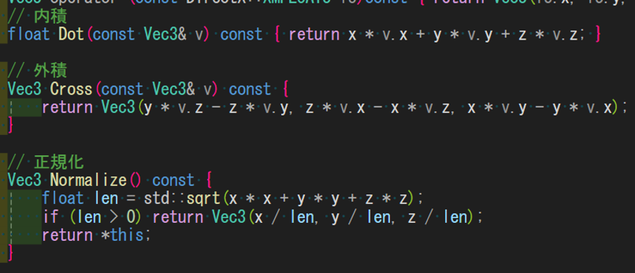
重力、摩擦、回転、停止判定を一つの巨大な処理に詰め込むと、どこを直せば挙動が変わるのか追いにくくなるため、RigidBody として責務を分離しました。 パラメーターごとに調整できるようにしたことで、跳ねすぎる、滑りすぎる、止まりにくいといった問題を切り分けながら修正できるようになりました。
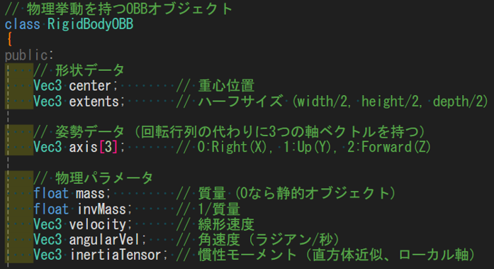
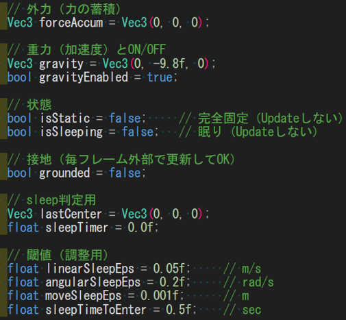
OBB によって見た目と判定のずれを抑えられ、物理挙動の説得力が上がりました。 また、補助関数と RigidBody の導入によって、複雑な計算をその場しのぎで増やすのではなく、次に別の物体へ流用できる形に近づけられています。
見た目の違和感は、判定、計算、パラメーターのどこに原因があるのかを切り分けないと直しきれません。 複雑な物理挙動ほど、責務を分離して観察可能な単位へ分けることが、最終的には調整速度と品質の両方につながると実感しました。
Personal Project

エディタ制作そのものを目的に進めた作品です。 3D グリッド上へ Box やモデルを配置し、マップ構成を実行中に確認しながら作れるようにしました。
配置、削除、モデル差し替え、保存 / 読み込みをエディタ内で完結できるようにし、ゲーム制作中に発生する反復作業を減らしました。 作業中に必要な調整を後回しにせず、その場で触れることを重視して構成しています。
Work In Progress

探索、採掘、帰還、売却、再探索というループを検証するために制作している作品です。 ゲーム本体とツールの両方を並行で整え、大きめの規模でも破綻しない構成を試しています。
プレイヤーの移動、ダッシュ、回避、採掘、ロープ昇降、マップ確認、戦闘など、探索に必要な行動を一通り実装しました。 さらに、体力、スタミナ、精神力を行動と結びつけ、単なる表示ではなく探索判断に関わる要素として扱えるようにしています。
あわせて、敵の接近 / 攻撃挙動、取得アイテム、ピン設置や全体マップなどの UI、地形生成エディタも整備しています。 ゲーム本体だけでなく、制作中に必要になるツールをその都度作り足しながら、実際に必要な支援機能を検証しています。
Utility Tool
課題提出のたびに必要ファイルを手作業で集めて圧縮する負担を減らすために作成したツールです。 便利な機能を作るだけでなく、初学者でも迷わず使える UI や配布導線まで含めて設計しました。
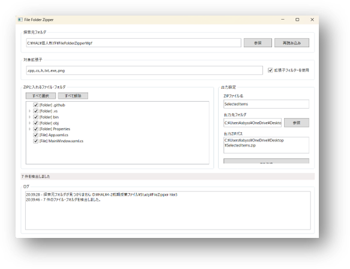
指定フォルダから提出に必要なファイルだけを抽出し、そのまま Zip 化できるようにしました。 事前に出力ファイル名を変更できるようにし、提出ルールに合わせたファイル作成まで一連で完了できる構成にしています。
画面は WPF で構成し、選択、確認、圧縮という流れが迷わず進むようにレイアウトしました。 また、導入方法や使い方を整理した資料やインストーラーも用意し、ツールが使われるところまで考えて整備しました。
毎回の提出作業では、必要なファイルを探す、選び漏れがないか確認する、Zip 名を整える、といった細かい作業が積み重なっていました。 特に慣れていない人ほど手順を覚えにくく、同じところで時間を使いやすい点が課題でした。
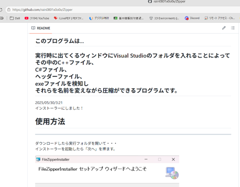
操作の中心を「抽出対象の確認」と「出力結果の明確化」に置き、手順を画面内で完結できるようにしました。 単なる圧縮機能ではなく、提出作業の失敗を減らすことを目的に、必要ファイル抽出と Zip 化を一体の流れとして設計しています。
手作業の確認回数を減らし、提出前の負担を軽くできました。 さらに、配布資料と導入手順まで整えたことで、作った本人以外でも運用できるツールとしてまとめられた点が大きな成果です。
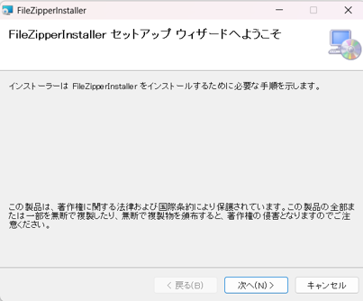
Team Project / Tooling
Unity / URP で制作したチーム作品です。 プレイヤーや収集物、敵、UI といったゲーム本体の実装に加え、制作効率を高めるための Editor ツール群も並行して整備しました。
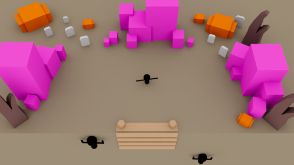
ゲーム本体では、プレイヤーの入力、移動、所持状態、収集物の生成と保持、敵の体力や攻撃ゲージ、HUD やヒット表示などに関わりました。 それぞれの処理を Core / Gameplay / Presentation のように役割で分け、依存関係が大きくなりすぎないよう意識して整理しています。
あわせて、制作中に繰り返し発生する作業を減らすために、ScriptableObjectManager、UI Object Creator、CollectibleVectorEmitter などのツールも作成しました。 ゲーム実装とツール整備を切り離さず、チーム全体の開発速度を上げるための補助まで担当した点が特徴です。
ScriptableObject が増えるほど目的のアセットを探す時間が増えていたため、一覧、検索、編集、ソートをまとめた管理ツールを作成しました。 アセット探索と編集を一つの導線にまとめることで、データ量が増えても扱いやすい状態にしています。
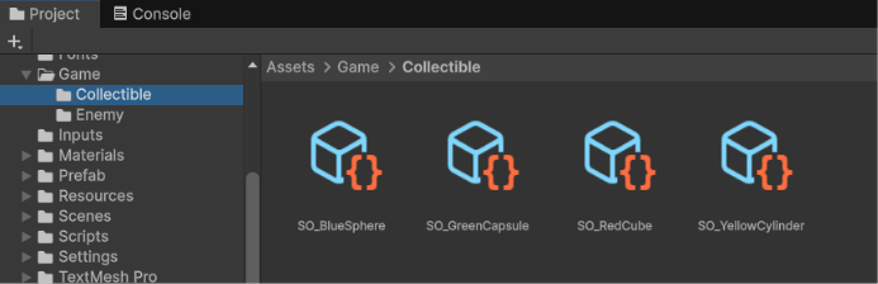
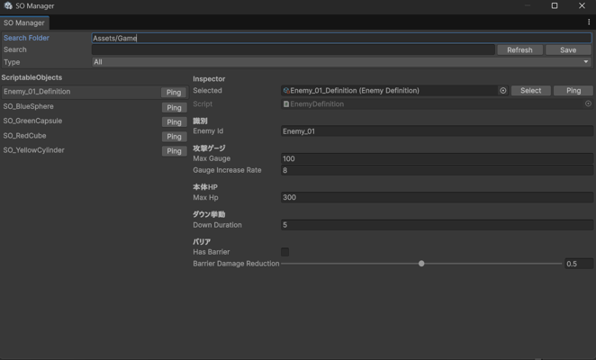
Image や Text を毎回手作業で探して配置すると、同じ UI を組むたびに時間がかかるため、Canvas 上へ必要な UI オブジェクトをまとめて生成するツールを用意しました。 配置作業の反復を減らし、UI 試作の速度を上げています。
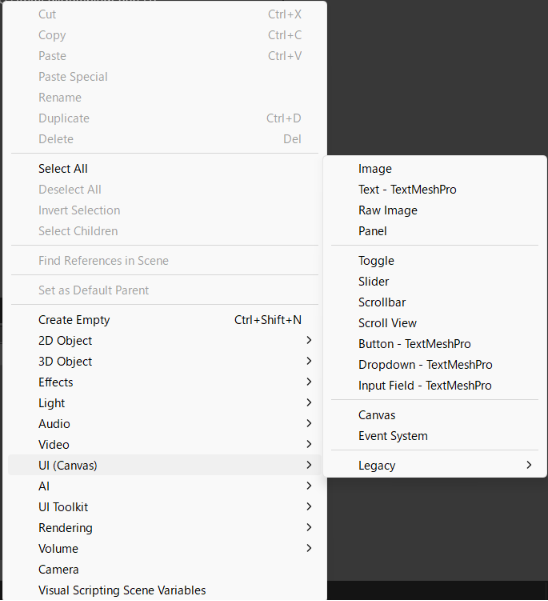
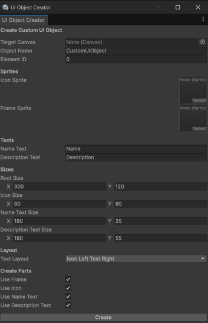
収集物の飛散方向や角度がコードの数値だけでは把握しにくかったため、Gizmo を使って方向と広がりを可視化できるようにしました。 見て調整できるようにしたことで、演出の調整コストを下げています。
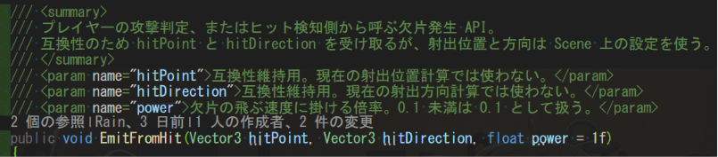
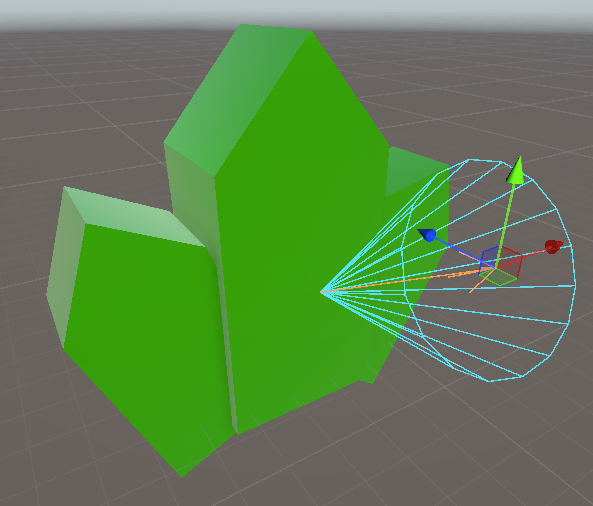
ゲーム本体の仕様変更に対応しつつ、データ整理や UI 作成のような反復作業も軽くできたことで、チーム全体の作業効率を上げることにつながりました。 実装対象が多い中でも、責務分離とツール整備の両面から支えられた点が、この作品での大きな学びです。
Personal Project
十字キーや WASD による文字選択と入力位置移動を実装し、コンソール上でも名前入力が成立するようにしました。 戦闘部分では、HP や攻撃力などの数値を構造体で管理し、ターン進行や行動順が追いやすい形で整理しています。
Other Activities
ImGui 講座では、即時モード特有の考え方でつまずきやすい点を分解し、表示、入力、値の保持、更新タイミングを順に理解できる構成へ整理して説明しました。 実装例だけでなく、なぜその書き方になるのかも含めて伝えることで、表面的な写経ではなく考え方ごと共有することを意識しました。
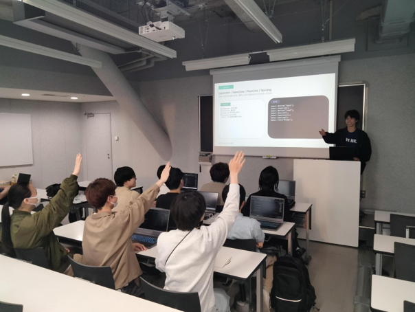
どの作品でも、実装対象が増えたときに破綻しない構造へ整えること、そして他の人が扱いやすい状態まで責任を持つことを一貫して意識しています。 ゲーム挙動とツール開発の両方を見ながら、開発全体を前に進める役割を担えることが自分の強みです。